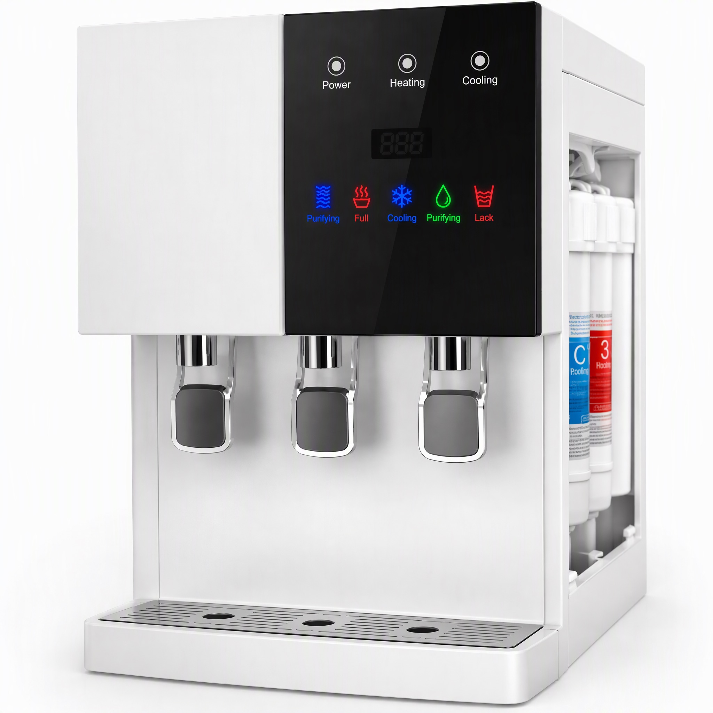
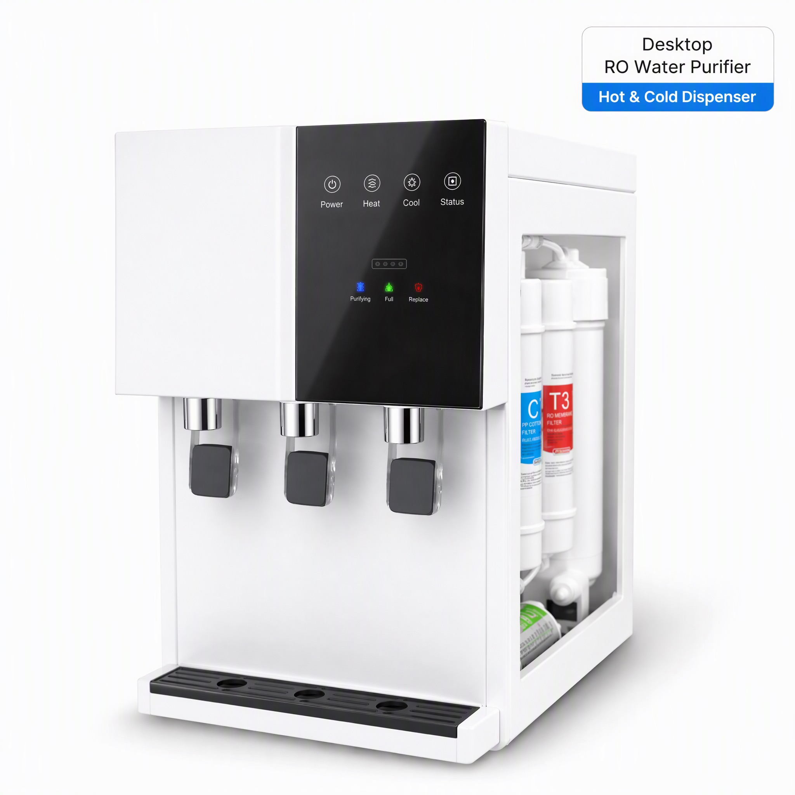
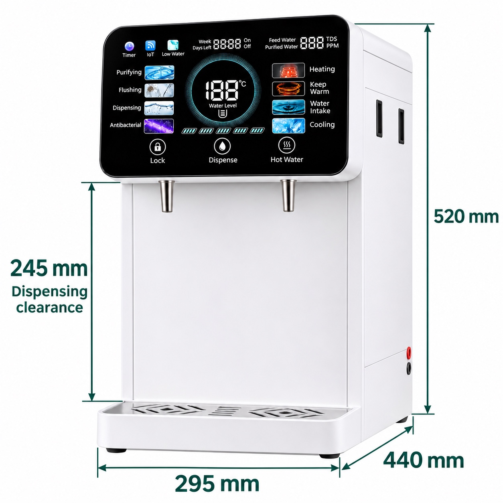
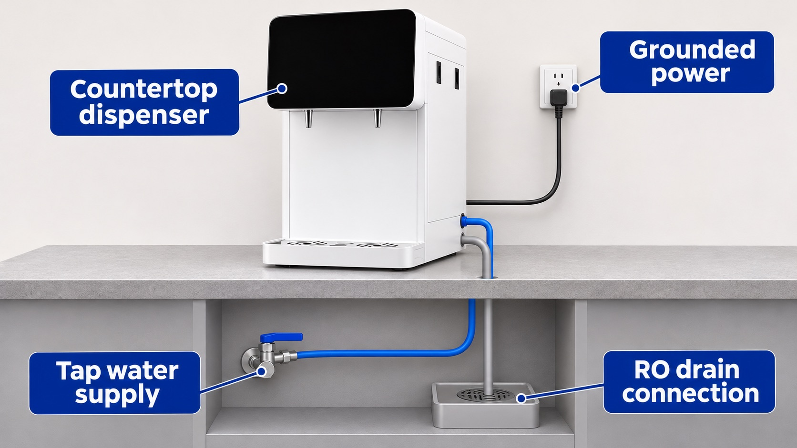

Ósmosis inversa de sobremesa. Agua caliente y fría. Hecho para su mercado.
Dispensador de agua de ósmosis inversa conectado a la red, con refrigeración por compresor, gran pantalla inteligente y dos o tres salidas de agua. Elija 100 o 200 GPD y consulte la configuración que necesitan sus clientes.
¿No sabe qué configuración elegir? Envíenos su aplicación y le ayudaremos a definirla.
Visualización de pantalla en inglés · las funciones personalizadas mostradas dependen de la configuración.
REFERENCIAS DE DISEÑO DE FÁBRICA
Diseños de panel en blanco y negro
Estas cinco ilustraciones de fábrica muestran diseños de tres salidas. Se pueden acordar dos o tres salidas para su pedido. Las ilustraciones de referencia no definen las funciones ni el rendimiento del equipo solicitado.

Detalle del panel frontal

Indicadores de estadoOpciones de capacidad de membranaInstalación sobre encimeraDispensación de agua caliente y refrigerada
4 etapasPP · CTO · RO · T33
100 / 200Opciones de membrana en GPD
295 mmAnchura del gabinete
TDSVisualización de lecturas del agua
UNA FORMA MÁS CLARA DE ELEGIR
Una plataforma. Diferentes necesidades de compra.
Para marcas y distribuidores
Desarrolle una gama OEM de dispensadores de ósmosis inversa de sobremesa con un gabinete compacto, refrigeración por compresor y pantalla de control personalizable. Consulte con la fábrica la marca privada, el embalaje, la capacidad de membrana y los requisitos del mercado de destino.
Para hogares, oficinas y proyectos
Planifique un punto de agua potable caliente y fría donde haya agua de red, desagüe y electricidad. Indique el número previsto de usuarios y la demanda máxima para comprobar la configuración de su aplicación.
CONFIGURACIÓN
Empiece con lo que sabe.
La refrigeración por compresor, el control inteligente y la detección de TDS componen la configuración propuesta para exportación. Las funciones adicionales se acuerdan para su pedido.
Puede añadir la cantidad y los requisitos detallados en el formulario de consulta.
¿100 GPD o 200 GPD?
Estas opciones indican la producción nominal diaria de la membrana, no el caudal instantáneo del grifo. La producción real depende del agua de alimentación y de la configuración final del sistema.
¿Qué se personaliza?
Se pueden acordar la marca, el idioma de pantalla y funciones adicionales. IoT y la función antibacteriana son opcionales; su implementación, compatibilidad y documentación de ensayos se confirman antes del pedido.
¿Qué debe confirmar su presupuesto?
Alimentación eléctrica y enchufe, rendimiento de agua fría y caliente, capacidades de almacenamiento, consumibles, cantidad del pedido, plazo de entrega y documentación para su mercado de destino.
PANTALLA INTELIGENTE
Vea el estado. Defina la interfaz.
Este modelo dispone de detección de TDS. Las etiquetas en inglés facilitan la comprensión de los estados; el idioma de pantalla y las funciones opcionales pueden adaptarse a su proyecto.
Ejemplo de pantalla personalizable. Las cifras con todos los segmentos encendidos, como 188°C y 888, son gráficos de ejemplo, no valores medidos ni declaraciones de rendimiento. Los indicadores IoT y antibacteriano corresponden a configuraciones opcionales. El TDS por sí solo no demuestra la seguridad del agua potable.
Leer todas las etiquetas de pantalla
Temporizador · IoT · Nivel bajo · Semana · Días restantes · Encendido / Apagado · Agua de alimentación · Agua purificada · TDS / PPM · Purificación · Lavado · Dispensación · Antibacteriano · Calentamiento · Mantener caliente · Entrada de agua · Refrigeración · Nivel de agua.
ÓSMOSIS INVERSA DE CUATRO ETAPAS
Filtros accesibles. Planificación clara del mantenimiento.
Cartucho de sedimentos PP
Prefiltración de partículas en suspensión.
Cartucho de carbón CTO
Pretratamiento con carbón antes de la membrana de ósmosis inversa.
Membrana de ósmosis inversa
Separación por ósmosis inversa; elija 100 o 200 GPD.
Cartucho de carbón T33
Tratamiento final con carbón para el sabor.
Los intervalos de sustitución dependen de la calidad del agua, el uso y los cartuchos seleccionados. Solicite el juego de recambio compatible y las instrucciones de mantenimiento con su presupuesto.
Referencia retocada de muestra de fábrica. Disposición física de izquierda a derecha: PP, CTO, T33, RO. El componente inferior es una bomba presurizadora. La posición no representa el flujo del agua; la disposición interna final depende de la configuración.
ESPECIFICACIONES DEL PRODUCTO
Formato compacto. Detalles prácticos.
E500-TS-1 (B/W): detalles de selección confirmados
Tipo de producto
Dispensador de agua de ósmosis inversa de sobremesa conectado a la red
Refrigeración
Refrigeración por compresor con control inteligente
Opciones de membrana de ósmosis inversa
100 GPD / 200 GPD
Filtración
PP, CTO, RO y T33
Dimensiones (ancho × fondo × alto)
295 × 440 × 520 mm
Altura libre de dispensación
245 mm (plano de referencia)
Salidas de agua
Dos / Tres
Pantalla
Gran pantalla inteligente con detección de TDS
Conexiones de suministro
Agua de red, desagüe de ósmosis inversa y alimentación eléctrica con tierra
Opciones OEM
Marca, embalaje y pantalla localizada; funciones adicionales por acuerdo
Confirme la tensión, la potencia nominal, la capacidad de los depósitos, los intervalos de temperatura y el rendimiento máximo de dispensación en las especificaciones de su pedido.

ANTES DE LA INSTALACIÓN
Tres conexiones que planificar.
Este dispensador de sobremesa de ósmosis inversa se conecta a la red. Requiere suministro de agua, conexión independiente de desagüe del concentrado y toma eléctrica adecuada con tierra.

Resumen de conexiones · la posición de los puertos depende de la configuración solicitada.
01 · Entrada de agua Agua de red a la entrada designada.
02 · Salida de desagüe de ósmosis inversa Línea independiente de concentrado a un desagüe adecuado.
03 · Alimentación con toma de tierra Adapte la alimentación y el enchufe a su pedido.
Escena de instalación de referencia. Deje acceso lateral para filtros, tuberías y ventilación. Siga las instrucciones suministradas y los requisitos locales.
PREGUNTAS DEL COMPRADOR
Antes de solicitar presupuesto.
¿Este dispensador de sobremesa necesita conexión de agua?
Sí. Se conecta al agua de red, a un desagüe independiente de concentrado de ósmosis inversa y a una alimentación eléctrica adecuada con tierra. No es un dispensador de llenado manual sin instalación.
¿Puedo pedir 100 GPD o 200 GPD?
Ambas opciones de membrana están disponibles. GPD indica la producción diaria nominal de la membrana, no la velocidad de dispensación del grifo. Las condiciones de alimentación y la configuración final afectan a la producción.
¿Utiliza refrigeración por compresor?
La refrigeración por compresor con control inteligente es la configuración propuesta para exportación. Consulte los requisitos especiales con la fábrica.
¿Suministran dispensadores OEM o de marca privada?
Sí. Consulte su marca, embalaje, idioma de pantalla, cantidad y mercado de destino. La cantidad mínima, el plazo y la documentación específica se confirman en el presupuesto.
¿Se incluyen TDS, IoT y función antibacteriana?
La detección de TDS está disponible. IoT y la función antibacteriana son personalizaciones opcionales; la interfaz mostrada es un ejemplo. Confirme las funciones implementadas y la documentación de su pedido.
¿Qué información necesitan para un presupuesto?
Indique sus datos de contacto y el uso previsto. Añada la membrana preferida, cantidad aproximada, destino y necesidades de personalización cuando los conozca. Puede pedir ayuda para elegir la configuración.
¿Cómo planifico la sustitución de filtros?
Solicite el juego de recambio compatible PP, CTO, RO y T33 y las instrucciones de mantenimiento. Los intervalos dependen de la calidad del agua de alimentación, el uso y los cartuchos solicitados.
DEFINAMOS SU E500-TS-1
Su mercado. Su configuración.
Indíquenos su aplicación, cantidad y destino. Le ayudaremos a seleccionar la configuración.